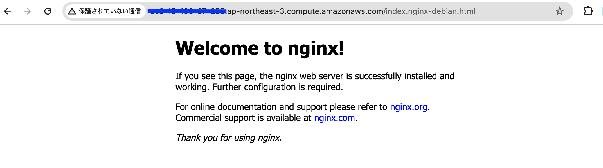

本稿では、当サイトのサーバー側の設定手順を記載しています。
index.html と、本稿
/howto/infra_no1.html)
AWS にルートユーザーでサインインし、AWS の画面左上の検索窓で「EC2」と入力して、EC2 ダッシュボードを開く。画面中央部の「インスタンスを起動」という橙色のボタンを押下する。
画面中央の「クイックスタート」で Ubuntu を選択する。Amazon マシンイメージ(AMI) は、今回の使用環境であり、かつ、無料利用枠の対象(※1)でもある、「Ubuntu Server 20.04 LTS (HVM), SSD Volume Type 」を選択する。アーキテクチャは、64ビット (Arm)を選択すると、無料利用枠の対象(※1)でなくなるため、64ビット (x86)のままにしておく。
※1 2024/2/20 時点


上図「ファイアウォール(セキュリティグループ)」では、「セキュリティグループを作成」「任意の場所」を選択し、「からの SSH トラフィックを許可」「インターネットからの HTTP トラフィックを許可」にチェックを入れる。(※2)
※2 上図では HTTPS にもチェックが入ってしまっているが、後で削除している。
起動するインスタンスに SSH でアクセスするため、キーペアを作成する。任意の名前をつけて、キーペアをダウンロードする。
以上が完了したあと、「インスタンスの起動」ボタンを押下し、インスタンスを起動する。
ターミナルを開き、1-2. キーペアの作成 にて作成したキーペアを、
~/.ssh ディレクトリ配下に移動させる。ディレクトリがなければ作成する。
「インスタンスに接続」>「SSH
クライアント」と画面遷移すると、以下のような接続手順が記されている。
xxx.pem
chmod 400 "xxx.pem"
4.パブリック DNS を使用してインスタンスに接続 例:
ssh -i "xxx.pem" ubuntu@(割り当てられたパブリック IPv4 DNS)
この手順に従って、SSH での接続を試みる。
Web サーバー用のソフトとして、Nginx を選択する。本稿の執筆時点で、Web サイトの用途は HTML を1ページ表示するにとどまり、ここからサイトをどのような方向性で展開していくか決めかねているため、一旦、直近で学習した Nginx の復習がてら、設定をしていく。また、Nginx の方がメモリの使用量が少ないため、EC2 の無料枠を使用している状況下にも向いていると考えた。
以下のコマンドを実行して、Nginx をインストールする。
sudo apt update
sudo apt install nginx

一度、インストールに成功しているか、ブラウザで確認する。http://(コピーしたIP アドレス)
にアクセスして、以下のような画面が表示されていればよい。

作成したHTML をEC2 インスタンスに配置し、公開する。以下のコマンド( SSH
接続に使ったものの ssh を
sftp に置き換えたもの)でログインできる。
sftp -i "~/.ssh/xxx.pem" ubuntu@(割り当てられたパブリック IPv4 DNS)
SFTP では、cd やls
などのコマンドが使えるため、それを利用して、ドキュメントルートの/var/www/html
にリモートのカレントディレクトリを移動させ... たいところだが、EC2
のユーザーまわりの設定がそのままだと、ドキュメントルートへのパーミッションがないのか、Permission Denied.
が発生してしまう。そのため、一旦、/home/ubuntu
下に転送用の一時的なディレクトリtemp を作成し、そこから再度 SSH
でログインして、mv コマンドで移動させるようにする。
また、lcd やlls など、通常のコマンドにl
をつけることで、ローカルの操作が可能となる。これを使い、ローカルのカレントディレクトリを、作成した
HTML が置かれている場所に移動させる。
カレントディレクトリの移動が完了したら、ディレクトリの構成が一致するように、mkdir
でディレクトリを作成する。Ubuntu では、SFTP のput
コマンドで、ディレクトリとその配下のファイルを転送できないバグ？があるためである。
ディレクトリ構成が一致したら、put
コマンドで各ディレクトリごとに必要なファイルを転送する。
> put (ローカルのファイル名) (リモートのディレクトリ名)
すべてのファイルの転送に成功したら、SFTP からログアウトし、再度 SSH でログインする。その後、以下のコマンドで、まとめて移動する。
sudo mv ~/temp/* /var/www/html/
再度ブラウザでアクセスすると、以下のように、作成したポートフォリオが表示できるようになった。

今回は、EC2 インスタンスを起動し、Nginx をインストール、作成した HTML ファイルの配置を行った。ドキュメントの作成や、キャプチャの撮影等をしながらの作業のため、正確な所要時間は不明だが、他の作業も入れると8時間ほどだったと思われる。この一連の流れで、SFTP でファイルを転送するところに課題があった。今後は、SFTP 専用のユーザーを作成して、ドキュメントルートに直接転送できるように考えていきたい。また、作成した Web サイトは HTTP 接続のため、HTTPS 化もしていきたい。そうすると、AWS 環境では、Let’s encrypt を AWS のドメインでは発行できないという、証明書の問題が発生する。そのため、独自ドメインの取得なども視野に入る。
Nginx とは？ Apache との違いについて分かりやすく解説！ (https://academy.gmocloud.com/qa/20160616/2761 閲覧日:2024-02-21, 更新日:2016-06-16)